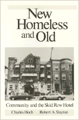

The answers to one of the most pressing problems of our time come from the poor themselves
The answers to one of the most pressing problems of our time come from the poor themselves


 The answers to one of the most pressing problems of our time come from the poor themselves
The answers to one of the most pressing problems of our time come from the poor themselves

|  |
New Homeless and OldCommunity and the Skid Row HotelCharles Hoch and Robert A. Slaytonpaper EAN: 978-0-87722-765-6 (ISBN: 0-87722-765-9) |
"This book...will undoubtedly influence the course of future homeless research and policy. It represents the most comprehensive statement today of the realities of Skid Row life and of the pitfalls of contrasting 'new' and 'old' homeless populations."
—American Journal of Sociology
Blending detailed historical perspective with contemporary survey research, Charles Hoch and Robert Slayton argue that the answers to one of the most pressing problems of our time come from the poor themselves. Their examination of the Skid Row single room occupancy hotel (SRO) reveals how communities formed by low-income single-person households have for decades offered the security, personal autonomy, and privacy for the "old" homeless that the "new" homeless lack. And they show how public urban renewal efforts, which destroyed the bulk of these hotels with the intent to rid the inner city of the Skid Row homeless, actually laid the foundation for today�s urban homeless crisis.
Focusing on Chicago from 1870 to the present, but including case studies in other cities, Hoch and Slayton analyze how these SRO hotels operated in the past and claim that the term "flop house" really described a wide range of shelter types available to the poor according to their economic conditions.
Based on their research, the authors conclude that policies for solving the homeless problem should focus mainly not on the homeless people, but on the institutional actors who benefit directly and indirectly from their predicament. This means changing public policies that encourage the destruction of affordable housing, especially SRO hotels, and implementing preservation, rehabilitation, and new construction policies instead.
"The authors argue that government attitudes rooted in New Deal philosophy, and public confusion of this group�s characteristics with those of a stereotypical Skid Row deviant, have resulted in inadequate planning for dealing with people who have a legitimate social problem and need enlightened attention. Recommended for professionals and academics."
—Library Journal
"Hoch and Slayton seem more savvy...about the political implications of housing and land-use policies. And they aren�t shy about naming names, which makes their study more comprehensive and compelling."
—Chicago Enterprise
"New Homeless and Old breaks with the tradition of previous research in several welcome respects...the approach taken is refreshingly eclectic, weaving together historical materials, survey evidence, and intimate knowledge of the local scene. In a devastating critique of advocates� ameliorative efforts, they show bow both compassion—and entitlement—based appeals have encouraged 'shelterization,' thus threatening to institutionalize the homelessness problem."
—Science
Charles Hoch is Associate Professor in the School of Urban Planning and Policy at the University of Illinois at Chicago.
Robert A. Slayton is Assistant Professor of History at Chapman College and author of Back of the Yards: The Making of a Local Democracy.
Conflicts in Urban and Regional Development, edited by John R. Logan and Todd Swanstrom.
Conflicts in Urban and Regional Development, edited by John R. Logan and Todd Swanstrom, includes books on urban policy and issues of city and regional planning, accounts of the political economy of individual cities, and books that compare policies across cities and countries.
© 2015 Temple University. All Rights Reserved. This page: http://www.temple.edu/tempress/titles/547_reg.html.